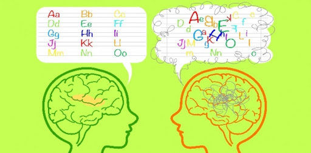
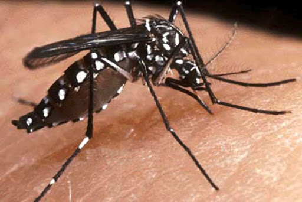

inicio
temas
informacion y fuentes
InfoTec
Peligros Alrededor Del Mundo y Curiosidades
seleccion de temas
El bullying
El acoso escolar
El reciclaje
Su importancia y beneficios
Alan kay
Historia del informatico Alan kay
El Dengue
Enfermedad Transmitida Por Mosquitos
El coronavirus
La Nueva Pandemia Que Golpea Al Mundo
El ciberbullying
El Acoso Por Las Redes
EL SO de Windows
La Historia de Windows
La dislexia

La Dificultad Para Hablar
El sO de Android
La Historia De Android
chikunguya

La Otra Enfermedad Transmitida por Mosquitos
informacion de la pagina
En esta pagina veras informacion sobre varios temas
como: enfermedades, acoso, o curiosidades informaticas como el so de windows o android.
fuentes:
windows
Android
La dislexia
La importancia del reciclaje
El Informatico Alan kay
El Ciberbullying
El Bullying
chikunguya
El covid-s19
El Dengue